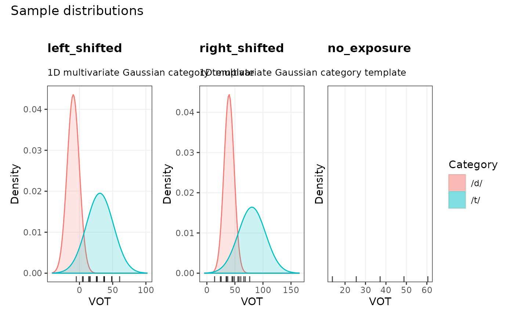
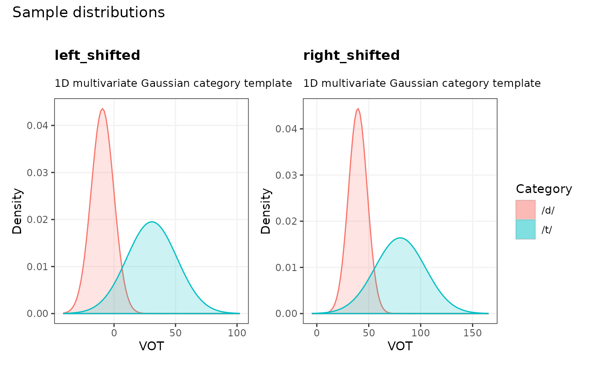
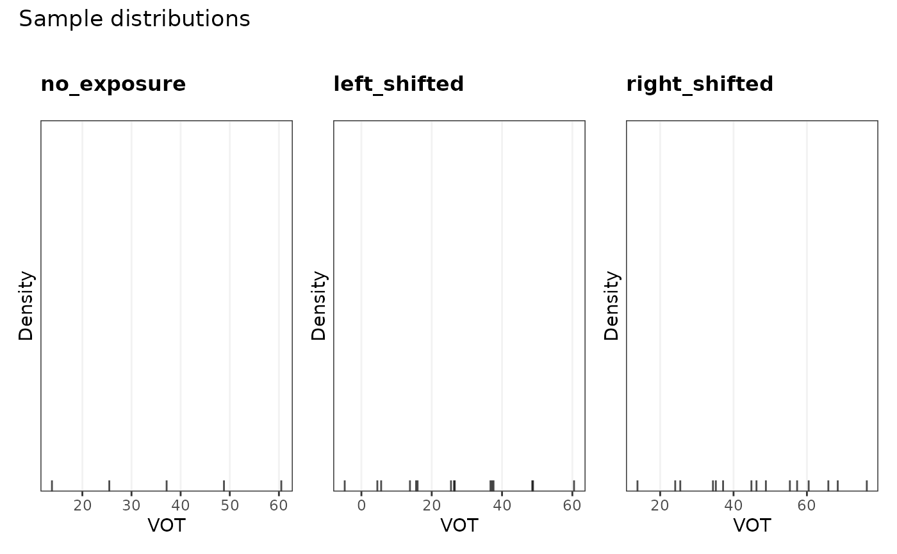

Visualizes the empirical distribution of cues across categories from observed exposure or test data in a fitted model or stanfit-input object.
Usage
plot_sample(
x,
sample = c("exposure", "test"),
cues = NULL,
categories = NULL,
groups = NULL,
aes = NULL,
densities = c("gaussian", "kernel"),
n_samples = NULL,
levels = NULL,
limits = NULL,
resolution = 100,
...
)
plot_exposure_sample(x, sample = "exposure", ...)
plot_test_sample(x, sample = "test", ...)
## S7 method for class <MVBU_Object>
plot_sample(
x,
sample = c("exposure", "test"),
cues = NULL,
categories = NULL,
groups = NULL,
aes = NULL,
densities = c("gaussian", "kernel"),
n_samples = NULL,
levels = NULL,
limits = NULL,
resolution = 100,
...
)Arguments
- x
An MVBU object (
MVBU_CategoryRepresentation,MVBU_CategoryRepresentationTemplate,MVBU_CognitiveModel, orMVBU_Stanfit).- sample
Data source to plot:
"exposure","test", or bothc("exposure", "test")(default).- cues
Character vector of cue names to plot (1, 2, or 3 cues). Defaults to all cues of the model up to 3 (or the first 3 cues if the model has more than 3 cues, analytically marginalizing out all remaining dimensions). At most 3 cue dimensions can be plotted simultaneously.
- categories
Character vector of category names to include. Defaults to
NULL(all categories).- groups
Character vector of group names to plot. Defaults to
NULL(all groups).- aes
Aesthetic mapping specification. Can be a character vector or a named list with elements
"exposure"and"test". Supported values include"points"(observed sample points),"contour"(empirical density contour lines),"fill-gradient"(continuous density fill), and"fill-discrete"(binned density levels). Defaults tolist(exposure = c("fill-gradient", "contour"), test = "points").- densities
Density estimation method for contour and fill aesthetics:
"gaussian"(default) evaluates parametric Gaussian distributions based on sample means and covariances, whereas"kernel"performs non-parametric kernel density estimation.- n_samples
Optional integer; maximum number of points to plot when
"points"is included inaes. Defaults toNULL(all observations).- levels
Numeric vector or list specifying density / probability levels. Defaults to two-tailed central probabilities corresponding to 1, 2, 3 sigma (
2 * stats::pnorm(1:3) - 1) for 1D/2D and sliced plots, and 2 sigma (2 * stats::pnorm(2) - 1) for 3D interactive ellipsoids. For a bivariate normal distribution \(\mathcal{N}(\boldsymbol{\mu}, \boldsymbol{\Sigma})\), the squared Mahalanobis distance follows \(\chi^2_2\), meaning the ellipse enclosing mass \(p \in (0, 1)\) has radius \(r = \sqrt{F_{\chi^2_2}^{-1}(p)} = \sqrt{-2 \ln(1 - p)}\).- limits
Optional named list or numeric vector specifying axis / cue limits (e.g.
list(F1 = c(200, 800), F2 = c(800, 2500))). Defaults toNULL(automatically computed from category distributions or exemplars).- resolution
Integer specifying the grid resolution along continuous cue dimensions. Defaults to
100Lfor 1D/2D category plots and60Lfor 3D sliced category plots.- ...
Additional arguments passed to methods.
Value
A ggplot object.
See also
plot_exposure_sample, plot_test_sample, plot_categories
Examples
sfi <- example_ideal_adaptor_stanfit_input()
plot_sample(sfi)

plot_exposure_sample(sfi)

plot_test_sample(sfi)
